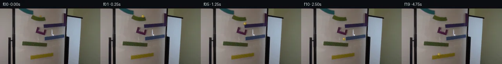

![首帧]()

Round 00
2026-11-05T02:41:52.579531+00:00像素候选变化代码 +175/−0inspection 更新
pixels 14bd8b175850682a · code a5d17e179fc86c7d
查看本轮 generate.py 真实 diff
--- previous/generate.py
+++ current/generate.py
@@ -0,0 +1,175 @@
+from pathlib import Path
+
+import numpy as np
+from PIL import Image, ImageDraw
+
+import artifact_io
+
+
+ROOT = Path(__file__).resolve().parent
+CENTERS = [
+ (103.0, 19.0),
+ (108.0, 20.0),
+ (113.0, 22.0),
+ (116.0, 29.0),
+ (117.0, 37.0),
+ (112.0, 39.0),
+ (109.0, 46.0),
+ (112.0, 58.0),
+ (120.0, 70.0),
+ (114.0, 72.0),
+ (109.0, 79.0),
+ (107.0, 85.0),
+ (114.0, 87.0),
+ (121.0, 88.0),
+ (125.0, 97.0),
+ (127.0, 107.0),
+ (127.0, 112.0),
+ (119.0, 114.0),
+ (108.0, 116.0),
+ (95.0, 119.0),
+]
+
+# Frames where the marble is supported by a ramp rather than in free flight.
+CONTACT = {1, 2, 4, 5, 8, 9, 11, 12, 13, 16, 17, 18, 19}
+
+
+def remove_source_marble(source: np.ndarray) -> np.ndarray:
+ """Reconstruct the tiny board patch hidden by the initial marble.
+
+ The source bead covers only x=99..107, y=16..21. Each hidden sample is
+ replaced by a horizontal interpolation between photographed pixels on the
+ two sides. A radial feather keeps the soft optical character of the shot.
+ """
+ clean = source.astype(np.float32).copy()
+ cx, cy = 103.0, 19.0
+ for y in range(15, 23):
+ left = source[y, 97].astype(np.float32)
+ right = source[y, 109].astype(np.float32)
+ for x in range(98, 109):
+ q = ((x - cx) / 5.1) ** 2 + ((y - cy) / 4.0) ** 2
+ if q >= 1.0:
+ continue
+ u = (x - 97.0) / 12.0
+ estimate = left * (1.0 - u) + right * u
+ # Full correction in the core, smoothly reduced at the boundary.
+ weight = min(1.0, (1.0 - q) * 2.3)
+ clean[y, x] = clean[y, x] * (1.0 - weight) + estimate * weight
+ return np.clip(np.rint(clean), 0, 255).astype(np.uint8)
+
+
+def alpha_over(canvas: np.ndarray, color: np.ndarray, alpha: np.ndarray) -> None:
+ a = np.clip(alpha, 0.0, 1.0)[..., None]
+ canvas[:] = canvas * (1.0 - a) + color * a
+
+
+def draw_marble(frame: np.ndarray, cx: float, cy: float, contact: bool) -> np.ndarray:
+ """Composite a small translucent, optically soft amber glass bead."""
+ out = frame.astype(np.float32).copy()
+ h, w = out.shape[:2]
+ yy, xx = np.mgrid[0:h, 0:w].astype(np.float32)
+
+ if contact:
+ # Compact contact shadow: broad enough to anchor the bead, but still
+ # consistent with the low-contrast lighting and focus of the source.
+ shadow = np.exp(
+ -0.5
+ * (
+ ((xx - (cx + 0.7)) / 3.9) ** 2
+ + ((yy - (cy + 3.0)) / 1.25) ** 2
+ )
+ ) * 0.19
+ alpha_over(out, np.zeros_like(out), shadow)
+
+ dx = xx - cx
+ dy = yy - cy
+ radius = np.sqrt((dx / 3.9) ** 2 + (dy / 3.7) ** 2)
+ # Feathered silhouette, with a slightly darker glass rim.
… diff truncated; 88 more lines …